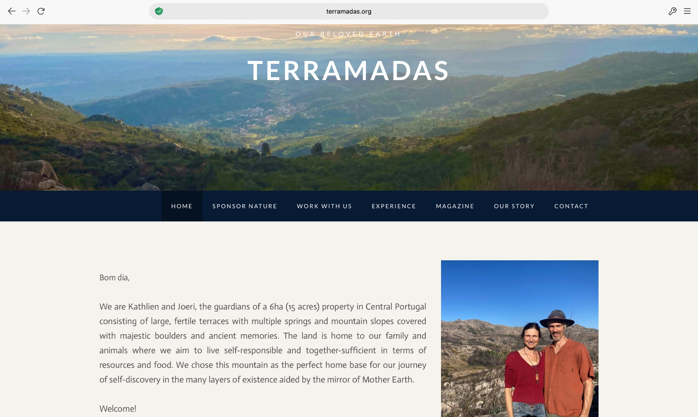
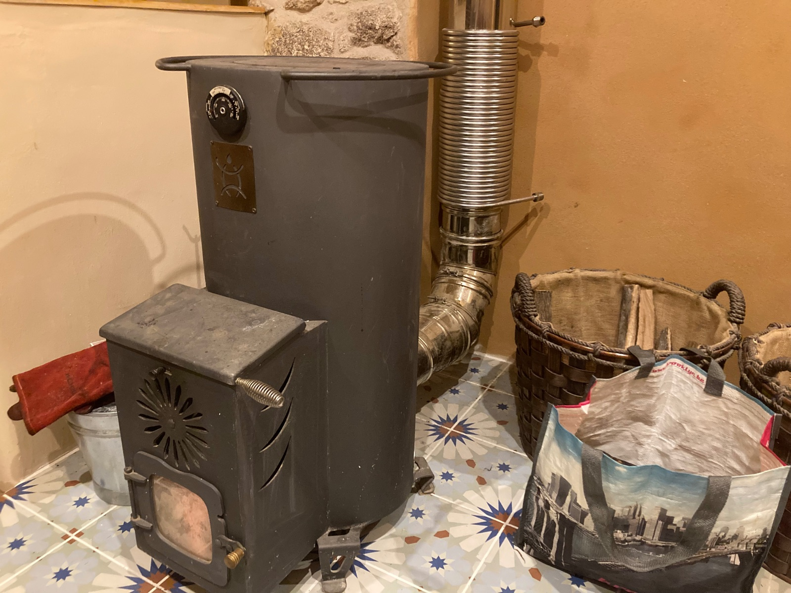

November 23, 2026
November 23, 2026
LOGGING A XUNZEL INVERTER
Finding out how to log a solar inverter without a manual or any help from the company.
Hi, I'm Joeri. I tinker with life off the grid: power, water, heat and everything in between. But I also make little games in C++ and html apps to help me with all the above. Here I share what I build, with the parts, the mistakes and the code.
November 23, 2026
Finding out how to log a solar inverter without a manual or any help from the company.

November 21, 2026I used claude to create an online website editor
 september 15, 2026
september 15, 2026
I still like to create little games in C++, originally for Arduboy, but they also run in your browser

November 21, 2026Off-grid and heating, how are we heating our house.